Geometry from existing shapes
Offset
Builds a thicker or thinner version of proto by offsetting its shells by r. A positive r offsets outward; a negative r offsets inward.
Signature:
offset(proto, distance)
Example:
offset(cone(r1=15,r2=10,h=20), 5)
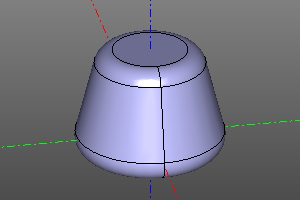
Ruled surface
Builds a face on a ruled surface between curves a and b.
Signature:
ruled(a, b)
Example:
ruled(circle(r=20, wire=True), circle(r=20, wire=True).up(20))
ruled(circle(r=20, wire=True), circle(r=20, wire=True).rotZ(math.pi/2*3).up(20))
ruled(
interpolate([(0,0),(-4,10),(4,20),(-6,30),(6,40)]),
interpolate([(0,0),(-2,10),(2,20),(-4,30),(4,40)]).up(20),
)
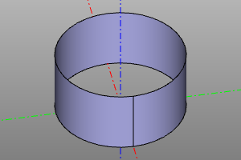
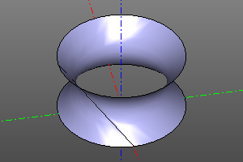
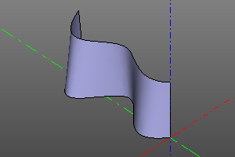
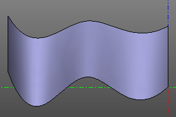
Loft
Builds a shape through an array of wire profiles. The shell option creates a shell instead of a solid. The smooth option switches from ruled surfaces to smooth approximation. When approximation is enabled, maxdegree limits the polynomial degree.
Signature:
loft(profiles, smooth=False, shell=False, maxdegree=4)
Example:
profiles = [circle(10, wire=True), circle(15, wire=True).up(20),
circle(8, wire=True).up(40)]
body = loft(profiles, smooth=True)
shell = loft(profiles, smooth=True, shell=True)
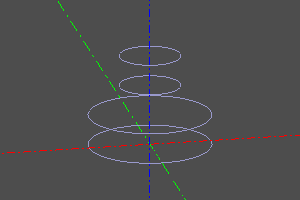
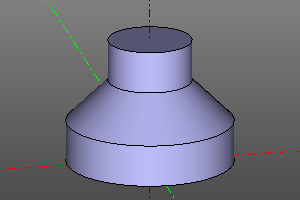
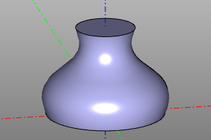
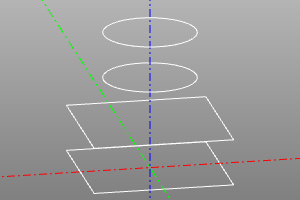
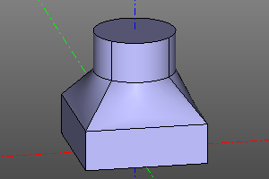
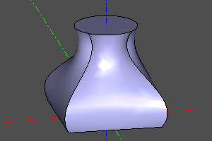
loft(..., shell=False) returns a Solid and requires closed profiles to build a valid solid. For open profiles, use shell=True to get a Shell. An open profile with shell=False raises ValueError identifying the profile. This check runs when the operation is evaluated; use result.validate() to check for other geometry defects.